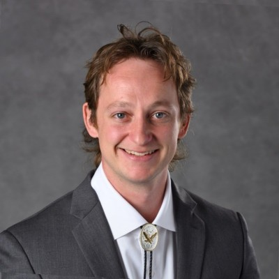
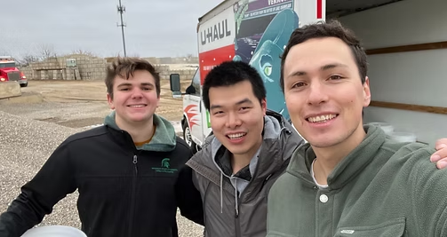
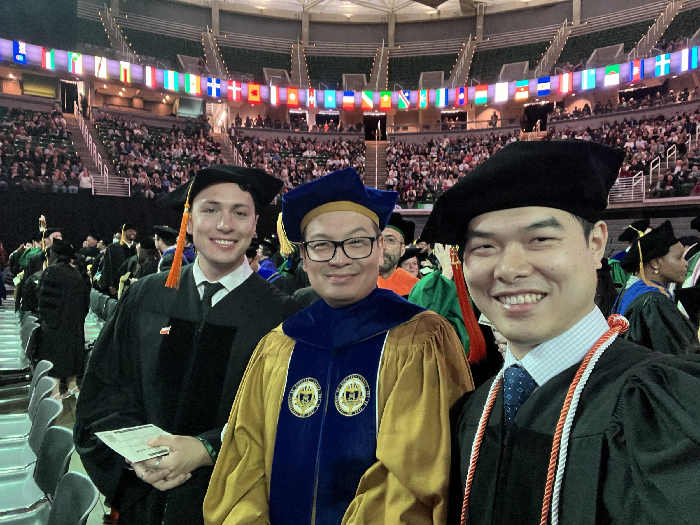

POSTDOCTORAL RESEARCHER
Peizhi Wang
Research focuses on ductile cementitious materials and corrosion resistance.
Education & background
From Xi’an, China. Peizhi enjoys photography.
PEOPLE
Meet researchers whose work has helped shape the RISE Infrastructure Materials Laboratory.
PRINCIPAL INVESTIGATOR

ASSISTANT PROFESSOR
Civil and Environmental Engineering
Michigan State University
Qingxu (Bill) Jin, PhD, PE, M.ASCE is an assistant professor in the Department of Civil and Environmental Engineering at Michigan State University (MSU) and the principal investigator of the RISE Infrastructure Materials Lab at MSU.
His research focuses on the development of advanced infrastructure materials with enhanced durability, adaptability, and multifunctionality, particularly for extreme environments. His pioneering work on “self-heating, self-healing bendable concrete” has gained significant public interest, featured in media outlets such as The Detroit News, Detroit Free Press, Yahoo! News, and local stations WILX 10 and Local 4. He is also a recipient of the U.S. Department of Energy (DOE) ARPA-E Inspiring Generations of New Innovators to Impact Technologies in Energy (IGNIITE) Award 2025 for early-career energy Innovators.
Dr. Jin earned his Ph.D. in Civil and Environmental Engineering from the Georgia Institute of Technology, with a minor in Materials Science. He also holds dual M.Sc. degrees in Civil Engineering and Natural Resources & Environment from the University of Michigan, Ann Arbor. He previously served as a guest researcher at the National Institute of Standards and Technology (NIST).
A passionate advocate for STEM education, Dr. Jin is an American Society of Civil Engineers (ASCE) Excellence in Engineering Education (ExCEEd) Fellow, a STEM Ambassador for MSU, and a National Science Foundation (NSF) CMMI Game Changer Academies (C-GCA) Panel Fellow. He is a licensed Professional Engineer (P.E.) in Michigan and Maryland, and a member of the honor societies Sigma Xi and Chi Epsilon.
CURRENT TEAM
Meet the researchers working across materials science and civil engineering.
POSTDOCTORAL RESEARCHER
Research focuses on ductile cementitious materials and corrosion resistance.
From Xi’an, China. Peizhi enjoys photography.

PH.D. CANDIDATE
Research interests include the development of low-carbon cementitious materials.
From Santiago, Chile. Diego has played a wide range of sports.
PH.D. CANDIDATE
Research interests include 3D printing of cementitious materials.
From Shanxi, China. Klay enjoys travel and has visited more than 20 U.S. states.
PH.D. STUDENT
Research focuses on cementitious materials, with an emphasis on ductility and durability.
From Busan, Republic of Korea. Minseok has maintained a fitness regimen for a long time.

UNDERGRADUATE RESEARCHER
Honors College undergraduate at Michigan State University; joined the RISE Materials Lab in fall 2026.
LinkedIn
LAB LIFE
A glimpse of the people and moments that make up the RISE community.







CONNECT WITH RISE
Research, education and collaboration at Michigan State University.
billjin@egr.msu.edu ↗RESEARCH SUPPORT & COLLABORATIONS
We gratefully acknowledge our research sponsors and collaborators:


Research Support & Collaborations
Our research has received support from the U.S. Department of Energy through the ARPA-E IGNIITE program, NASA through the Michigan Space Grant Consortium, and the U.S. Department of Transportation through MSU's participation in the Advanced Bridge Technology Clearinghouse (ABTC).
Our research collaborations also include scientists affiliated with the National Energy Technology Laboratory (NETL).
© 2026 RISE Infrastructure Materials Laboratory.